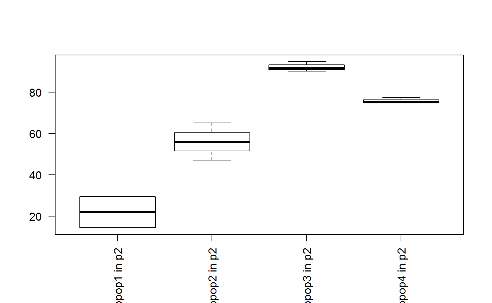
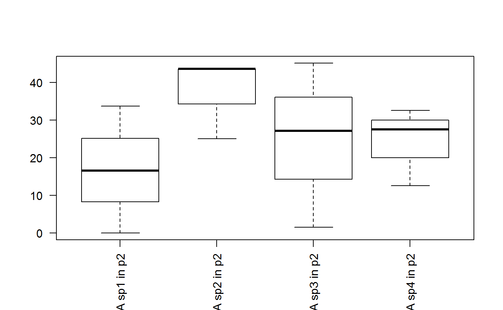

vignette.Rmd# To install scGPS from github (Depending on the configuration of the local
# computer or HPC, possible custom C++ compilation may be required - see
# installation trouble-shootings below)
devtools::install_github("IMB-Computational-Genomics-Lab/scGPS")
# for C++ compilation trouble-shooting, manual download and installation can be
# done from github
git clone https://github.com/IMB-Computational-Genomics-Lab/scGPS
# then check in scGPS/src if any of the precompiled (e.g. those with *.so and
# *.o) files exist and delete them before recompiling
# then with the scGPS as the R working directory, manually install and load
# using devtools functionality
# Install the package
devtools::install()
#load the package to the workspace
library(scGPS)The purpose of this workflow is to solve the following task: given a mixed population with known subpopulations, estimate transition scores between these subpopulation.
# load mixed population 1 (loaded from sample1 dataset, named it as day2)
library(scGPS)
day2 <- sample1
mixedpop1 <- new_scGPS_object(ExpressionMatrix = day2$dat2_counts,
GeneMetadata = day2$dat2geneInfo, CellMetadata = day2$dat2_clusters)
# load mixed population 2 (loaded from sample2 dataset, named it as day5)
day5 <- sample2
mixedpop2 <- new_scGPS_object(ExpressionMatrix = day5$dat5_counts,
GeneMetadata = day5$dat5geneInfo, CellMetadata = day5$dat5_clusters)# select a subpopulation
c_selectID <- 1
# load gene list (this can be any lists of user selected genes)
genes <- GeneList
genes <- genes$Merged_unique
# load cluster information
cluster_mixedpop1 <- colData(mixedpop1)[,1]
cluster_mixedpop2 <- colData(mixedpop2)[,1]
#run training (running nboots = 3 here, but recommend to use nboots = 50-100)
LSOLDA_dat <- bootstrap(nboots = 3, mixedpop1 = mixedpop1,
mixedpop2 = mixedpop2, genes = genes, c_selectID = c_selectID,
listData = list(), cluster_mixedpop1 = cluster_mixedpop1,
cluster_mixedpop2 = cluster_mixedpop2, trainset_ratio = 0.7)##
## Call: glmnet(x = as.matrix(dataset[, -which(colnames(dataset) == "Cluster_class")]), y = as.vector(dataset$Cluster_class), family = "binomial")
##
## Df %Dev Lambda
## [1,] 0 -1.442e-15 0.144900
## [2,] 1 1.029e-02 0.132100
## [3,] 1 1.885e-02 0.120300
## [4,] 1 2.598e-02 0.109600
## [5,] 1 3.193e-02 0.099890
## [6,] 1 3.689e-02 0.091020
## [7,] 1 4.104e-02 0.082930
## [8,] 1 4.450e-02 0.075560
## [9,] 1 4.739e-02 0.068850
## [10,] 1 4.980e-02 0.062730
## [11,] 1 5.182e-02 0.057160
## [12,] 2 5.414e-02 0.052080
## [13,] 3 5.832e-02 0.047460
## [14,] 3 6.194e-02 0.043240
## [15,] 3 6.506e-02 0.039400
## [16,] 3 6.775e-02 0.035900
## [17,] 3 7.007e-02 0.032710
## [18,] 4 7.223e-02 0.029800
## [19,] 4 7.415e-02 0.027160
## [20,] 4 7.582e-02 0.024740
## [21,] 4 7.725e-02 0.022550
## [22,] 4 7.848e-02 0.020540
## [23,] 4 7.954e-02 0.018720
## [24,] 4 8.044e-02 0.017060
## [25,] 4 8.122e-02 0.015540
## [26,] 4 8.189e-02 0.014160
## [27,] 4 8.246e-02 0.012900
## [28,] 5 8.294e-02 0.011760
## [29,] 5 8.335e-02 0.010710
## [30,] 5 8.371e-02 0.009760
## [31,] 5 8.400e-02 0.008893
## [32,] 5 8.426e-02 0.008103
## [33,] 5 8.447e-02 0.007383
## [34,] 5 8.465e-02 0.006727
## [35,] 5 8.480e-02 0.006129
## [36,] 5 8.493e-02 0.005585
## [37,] 5 8.504e-02 0.005089
## [38,] 5 8.513e-02 0.004637
## [39,] 5 8.521e-02 0.004225
## [40,] 5 8.527e-02 0.003849
## [41,] 5 8.533e-02 0.003507
## [42,] 5 8.537e-02 0.003196
## [43,] 5 8.541e-02 0.002912
## [44,] 5 8.544e-02 0.002653
## [45,] 5 8.547e-02 0.002418
## [46,] 5 8.549e-02 0.002203
## [47,] 5 8.551e-02 0.002007
## [48,] 5 8.552e-02 0.001829
## [49,] 5 8.554e-02 0.001666
## [50,] 5 8.555e-02 0.001518
## [51,] 5 8.556e-02 0.001383
##
## Call: glmnet(x = as.matrix(dataset[, -which(colnames(dataset) == "Cluster_class")]), y = as.vector(dataset$Cluster_class), family = "binomial")
##
## Df %Dev Lambda
## [1,] 0 1.281e-15 0.180200
## [2,] 1 1.591e-02 0.164200
## [3,] 1 2.916e-02 0.149600
## [4,] 1 4.021e-02 0.136300
## [5,] 1 4.946e-02 0.124200
## [6,] 1 5.719e-02 0.113100
## [7,] 1 6.368e-02 0.103100
## [8,] 1 6.911e-02 0.093930
## [9,] 1 7.367e-02 0.085590
## [10,] 1 7.749e-02 0.077990
## [11,] 1 8.069e-02 0.071060
## [12,] 1 8.338e-02 0.064750
## [13,] 1 8.563e-02 0.058990
## [14,] 3 8.993e-02 0.053750
## [15,] 3 9.409e-02 0.048980
## [16,] 3 9.766e-02 0.044630
## [17,] 3 1.007e-01 0.040660
## [18,] 3 1.033e-01 0.037050
## [19,] 3 1.056e-01 0.033760
## [20,] 4 1.077e-01 0.030760
## [21,] 4 1.095e-01 0.028030
## [22,] 4 1.110e-01 0.025540
## [23,] 4 1.123e-01 0.023270
## [24,] 4 1.135e-01 0.021200
## [25,] 4 1.145e-01 0.019320
## [26,] 4 1.153e-01 0.017600
## [27,] 4 1.160e-01 0.016040
## [28,] 4 1.166e-01 0.014610
## [29,] 4 1.172e-01 0.013310
## [30,] 4 1.176e-01 0.012130
## [31,] 4 1.180e-01 0.011050
## [32,] 4 1.183e-01 0.010070
## [33,] 4 1.186e-01 0.009177
## [34,] 4 1.189e-01 0.008362
## [35,] 4 1.191e-01 0.007619
## [36,] 4 1.192e-01 0.006942
## [37,] 4 1.194e-01 0.006326
## [38,] 4 1.195e-01 0.005764
## [39,] 4 1.196e-01 0.005252
## [40,] 4 1.197e-01 0.004785
## [41,] 4 1.198e-01 0.004360
## [42,] 4 1.198e-01 0.003973
## [43,] 4 1.199e-01 0.003620
## [44,] 4 1.199e-01 0.003298
## [45,] 4 1.199e-01 0.003005
## [46,] 4 1.200e-01 0.002738
## [47,] 4 1.200e-01 0.002495
## [48,] 4 1.200e-01 0.002273
## [49,] 4 1.200e-01 0.002071
## [50,] 4 1.201e-01 0.001887
## [51,] 4 1.201e-01 0.001720
## [52,] 4 1.201e-01 0.001567
## [53,] 4 1.201e-01 0.001428
##
## Call: glmnet(x = as.matrix(dataset[, -which(colnames(dataset) == "Cluster_class")]), y = as.vector(dataset$Cluster_class), family = "binomial")
##
## Df %Dev Lambda
## [1,] 0 -3.204e-15 0.126800
## [2,] 1 7.881e-03 0.115500
## [3,] 1 1.443e-02 0.105300
## [4,] 1 1.989e-02 0.095930
## [5,] 1 2.443e-02 0.087400
## [6,] 1 2.822e-02 0.079640
## [7,] 1 3.138e-02 0.072570
## [8,] 1 3.401e-02 0.066120
## [9,] 1 3.621e-02 0.060240
## [10,] 2 3.923e-02 0.054890
## [11,] 3 4.281e-02 0.050020
## [12,] 3 4.652e-02 0.045570
## [13,] 3 4.969e-02 0.041520
## [14,] 3 5.239e-02 0.037840
## [15,] 3 5.471e-02 0.034470
## [16,] 3 5.670e-02 0.031410
## [17,] 3 5.841e-02 0.028620
## [18,] 3 5.988e-02 0.026080
## [19,] 3 6.114e-02 0.023760
## [20,] 3 6.223e-02 0.021650
## [21,] 3 6.316e-02 0.019730
## [22,] 3 6.397e-02 0.017970
## [23,] 3 6.466e-02 0.016380
## [24,] 3 6.525e-02 0.014920
## [25,] 3 6.575e-02 0.013600
## [26,] 3 6.618e-02 0.012390
## [27,] 3 6.655e-02 0.011290
## [28,] 3 6.687e-02 0.010290
## [29,] 3 6.713e-02 0.009372
## [30,] 3 6.736e-02 0.008540
## [31,] 3 6.755e-02 0.007781
## [32,] 3 6.772e-02 0.007090
## [33,] 3 6.786e-02 0.006460
## [34,] 3 6.797e-02 0.005886
## [35,] 3 6.807e-02 0.005363
## [36,] 4 6.817e-02 0.004887
## [37,] 4 6.826e-02 0.004453
## [38,] 4 6.833e-02 0.004057
## [39,] 4 6.839e-02 0.003697
## [40,] 4 6.844e-02 0.003368
## [41,] 4 6.848e-02 0.003069
## [42,] 4 6.851e-02 0.002796
## [43,] 4 6.854e-02 0.002548
## [44,] 4 6.857e-02 0.002322
## [45,] 4 6.859e-02 0.002115
## [46,] 4 6.861e-02 0.001927
## [47,] 4 6.862e-02 0.001756
## [48,] 4 6.863e-02 0.001600
## [49,] 4 6.864e-02 0.001458# display the list of result information in the LASOLDA_dat object
names(LSOLDA_dat)## [1] "Accuracy" "ElasticNetGenes" "Deviance"
## [4] "ElasticNetFit" "LDAFit" "predictor_S1"
## [7] "ElasticNetPredict" "LDAPredict"LSOLDA_dat$ElasticNetPredict## [[1]]
## [[1]][[1]]
## NULL
##
## [[1]][[2]]
## NULL
##
## [[1]][[3]]
## NULL
##
## [[1]][[4]]
## NULL
##
## [[1]][[5]]
## [1] "ElasticNet for subpop1 in target mixedpop2"
##
## [[1]][[6]]
## [1] "NA"
##
## [[1]][[7]]
## [1] "ElasticNet for subpop2 in target mixedpop2"
##
## [[1]][[8]]
## [1] 65
##
## [[1]][[9]]
## [1] "ElasticNet for subpop3 in target mixedpop2"
##
## [[1]][[10]]
## [1] 90.22556
##
## [[1]][[11]]
## [1] "ElasticNet for subpop4 in target mixedpop2"
##
## [[1]][[12]]
## [1] 77.5
##
##
## [[2]]
## [[2]][[1]]
## NULL
##
## [[2]][[2]]
## NULL
##
## [[2]][[3]]
## NULL
##
## [[2]][[4]]
## NULL
##
## [[2]][[5]]
## [1] "ElasticNet for subpop1 in target mixedpop2"
##
## [[2]][[6]]
## [1] 14.4385
##
## [[2]][[7]]
## [1] "ElasticNet for subpop2 in target mixedpop2"
##
## [[2]][[8]]
## [1] 55.71429
##
## [[2]][[9]]
## [1] "ElasticNet for subpop3 in target mixedpop2"
##
## [[2]][[10]]
## [1] 91.72932
##
## [[2]][[11]]
## [1] "ElasticNet for subpop4 in target mixedpop2"
##
## [[2]][[12]]
## [1] 75
##
##
## [[3]]
## [[3]][[1]]
## NULL
##
## [[3]][[2]]
## NULL
##
## [[3]][[3]]
## NULL
##
## [[3]][[4]]
## NULL
##
## [[3]][[5]]
## [1] "ElasticNet for subpop1 in target mixedpop2"
##
## [[3]][[6]]
## [1] 29.41176
##
## [[3]][[7]]
## [1] "ElasticNet for subpop2 in target mixedpop2"
##
## [[3]][[8]]
## [1] 47.14286
##
## [[3]][[9]]
## [1] "ElasticNet for subpop3 in target mixedpop2"
##
## [[3]][[10]]
## [1] 94.73684
##
## [[3]][[11]]
## [1] "ElasticNet for subpop4 in target mixedpop2"
##
## [[3]][[12]]
## [1] 75LSOLDA_dat$LDAPredict## [[1]]
## [[1]][[1]]
## NULL
##
## [[1]][[2]]
## NULL
##
## [[1]][[3]]
## NULL
##
## [[1]][[4]]
## NULL
##
## [[1]][[5]]
## [1] "LDA for subpop 1 in target mixedpop2"
##
## [[1]][[6]]
## [1] 0
##
## [[1]][[7]]
## [1] "LDA for subpop 2 in target mixedpop2"
##
## [[1]][[8]]
## [1] 43.57143
##
## [[1]][[9]]
## [1] "LDA for subpop 3 in target mixedpop2"
##
## [[1]][[10]]
## [1] 1.503759
##
## [[1]][[11]]
## [1] "LDA for subpop 4 in target mixedpop2"
##
## [[1]][[12]]
## [1] 12.5
##
##
## [[2]]
## [[2]][[1]]
## NULL
##
## [[2]][[2]]
## NULL
##
## [[2]][[3]]
## NULL
##
## [[2]][[4]]
## NULL
##
## [[2]][[5]]
## [1] "LDA for subpop 1 in target mixedpop2"
##
## [[2]][[6]]
## [1] 16.57754
##
## [[2]][[7]]
## [1] "LDA for subpop 2 in target mixedpop2"
##
## [[2]][[8]]
## [1] 43.57143
##
## [[2]][[9]]
## [1] "LDA for subpop 3 in target mixedpop2"
##
## [[2]][[10]]
## [1] 27.06767
##
## [[2]][[11]]
## [1] "LDA for subpop 4 in target mixedpop2"
##
## [[2]][[12]]
## [1] 27.5
##
##
## [[3]]
## [[3]][[1]]
## NULL
##
## [[3]][[2]]
## NULL
##
## [[3]][[3]]
## NULL
##
## [[3]][[4]]
## NULL
##
## [[3]][[5]]
## [1] "LDA for subpop 1 in target mixedpop2"
##
## [[3]][[6]]
## [1] 33.68984
##
## [[3]][[7]]
## [1] "LDA for subpop 2 in target mixedpop2"
##
## [[3]][[8]]
## [1] 25
##
## [[3]][[9]]
## [1] "LDA for subpop 3 in target mixedpop2"
##
## [[3]][[10]]
## [1] 45.11278
##
## [[3]][[11]]
## [1] "LDA for subpop 4 in target mixedpop2"
##
## [[3]][[12]]
## [1] 32.5# summary results LDA
sum_pred_lda <- summary_prediction_lda(LSOLDA_dat = LSOLDA_dat, nPredSubpop = 4)
# summary results Lasso to show the percent of cells
# classified as cells belonging
sum_pred_lasso <- summary_prediction_lasso(LSOLDA_dat = LSOLDA_dat,
nPredSubpop = 4)
# plot summary results
plot_sum <-function(sum_dat){
sum_dat_tf <- t(sum_dat)
sum_dat_tf <- na.omit(sum_dat_tf)
sum_dat_tf <- apply(sum_dat[, -ncol(sum_dat)],1,
function(x){as.numeric(as.vector(x))})
sum_dat$names <- gsub("for subpop ","sp", sum_dat$names )
sum_dat$names <- gsub("in target mixedpop","in p", sum_dat$names)
colnames(sum_dat_tf) <- sum_dat$names
boxplot(sum_dat_tf, las=2)
}
plot_sum(sum_pred_lasso)
plot_sum(sum_pred_lda)
# summary accuracy to check the model accuracy in the leave-out test set
summary_accuracy(object = LSOLDA_dat)## [1] 66.51163 63.25581 65.58140# summary maximum deviance explained by the model
summary_deviance(object = LSOLDA_dat)## $allDeviance
## [1] "0.08552" "0.1007" "0.06575"
##
## $DeviMax
## dat_DE$Dfd Deviance DEgenes
## 1 0 0.1007 genes_cluster1
## 2 1 0.1007 genes_cluster1
## 3 3 0.1007 genes_cluster1
## 4 remaining DEgenes remaining DEgenes remaining DEgenes
##
## $LassoGenesMax
## NULL###############################################
# for building time in bioconductor, the following
# is not run, but users can run it in their machine
###############################################
# #3. A complete workflow of the scGPS:
# * The purpose of this workflow is to solve the following task: given an unknown*
# * mixed population, find clusters and estimate relationship between clusters*
#
# ##3.1 Identify clusters in a dataset using CORE
# *(skip this step if clusters are known)*
# ```{r CORE, warning = FALSE, message = FALSE, eval = FALSE}
#
# # find clustering information in an expresion data using CORE
# day5 <- sample2
# cellnames <- colnames(day5$dat5_counts)
# cluster <-day5$dat5_clusters
# cellnames <-data.frame("Cluster"=cluster, "cellBarcodes" = cellnames)
# mixedpop2 <-new_scGPS_object(ExpressionMatrix = day5$dat5_counts,
# GeneMetadata = day5$dat5geneInfo, CellMetadata = cellnames)
#
# CORE_cluster <- CORE(mixedpop2, remove_outlier = c(0), PCA=FALSE)
#
# # to update the clustering information, users can ...
# key_height <- CORE_cluster$optimalClust$KeyStats$Height
# optimal_res <- CORE_cluster$optimalClust$OptimalRes
# optimal_index = which(key_height == optimal_res)
#
# clustering_after_outlier_removal <- unname(unlist(
# CORE_cluster$Cluster[[optimal_index]]))
# corresponding_cells_after_outlier_removal <- CORE_cluster$cellsForClustering
# original_cells_before_removal <- colData(mixedpop2)[,2]
# corresponding_index <- match(corresponding_cells_after_outlier_removal,
# original_cells_before_removal )
# # check the matching
# identical(as.character(original_cells_before_removal[corresponding_index]),
# corresponding_cells_after_outlier_removal)
# # create new object with the new clustering after removing outliers
# mixedpop2_post_clustering <- mixedpop2[,corresponding_index]
# colData(mixedpop2_post_clustering)[,1] <- clustering_after_outlier_removal
#
# ```
#
# ##3.2 Identify clusters in a dataset using SCORE
# ##(Stable Clustering at Optimal REsolution)
# *(skip this step if clusters are known)*
# *(SCORE aims to get stable subpopulation results, *
# * by introducing bagging aggregation and bootstrapping to the CORE algorithm)*
# ```{r SCORE with bagging, warning = FALSE, message = FALSE, eval = FALSE}
#
# # find clustering information in an expresion data using SCORE
# day5 <- sample2
# cellnames <- colnames(day5$dat5_counts)
# cluster <-day5$dat5_clusters
# cellnames <-data.frame("Cluster"=cluster, "cellBarcodes" = cellnames)
# mixedpop2 <-new_scGPS_object(ExpressionMatrix = day5$dat5_counts,
# GeneMetadata = day5$dat5geneInfo, CellMetadata = cellnames )
#
# SCORE_test <- CORE_bagging(mixedpop2, remove_outlier = c(0), PCA=FALSE,
# bagging_run = 20, subsample_proportion = .8)
#
# ```
#
# ##3.3 Visualise all cluster results in all iterations
# ```{r visualisation, dev='CairoPDF', eval = FALSE}
# dev.off()
# ##3.2.1 plot CORE clustering
# p1 <- plot_CORE(CORE_cluster$tree, CORE_cluster$Cluster,
# color_branch = c("#208eb7", "#6ce9d3", "#1c5e39", "#8fca40", "#154975",
# "#b1c8eb"))
# p1
# #extract optimal index identified by CORE
# key_height <- CORE_cluster$optimalClust$KeyStats$Height
# optimal_res <- CORE_cluster$optimalClust$OptimalRes
# optimal_index = which(key_height == optimal_res)
# #plot one optimal clustering bar
# plot_optimal_CORE(original_tree= CORE_cluster$tree,
# optimal_cluster = unlist(CORE_cluster$Cluster[optimal_index]),
# shift = -2000)
#
# ##3.2.2 plot SCORE clustering
# #plot all clustering bars
# plot_CORE(SCORE_test$tree, list_clusters = SCORE_test$Cluster)
# #plot one stable optimal clustering bar
# plot_optimal_CORE(original_tree= SCORE_test$tree,
# optimal_cluster = unlist(SCORE_test$Cluster[SCORE_test$optimal_index]),
# shift = -100)
#
# ```
#
# ##3.4 Compare clustering results with other dimensional reduction methods
# ##(e.g., tSNE or CIDR)
# ```{r compare_clustering, eval = FALSE}
# #library(cidr)
# t <- tSNE(expression.mat=assay(mixedpop2))
# p2 <-plotReduced(t, color_fac = factor(colData(mixedpop2)[,1]),
# palletes =1:length(unique(colData(mixedpop2)[,1])))
# p2
# ```
#
# ##3.5 Find gene markers and annotate clusters
#
# ```{r find_markers, warning = FALSE, message = FALSE, eval = FALSE}
# #load gene list (this can be any lists of user-selected genes)
# genes <-GeneList
# genes <-genes$Merged_unique
#
# #the gene list can also be objectively identified by differential expression
# #analysis cluster information is requied for find_markers. Here, we use
# #CORE results.
#
# #colData(mixedpop2)[,1] <- unlist(SCORE_test$Cluster[SCORE_test$optimal_index])
#
# suppressMessages(library(locfit))
# suppressMessages(library(DESeq))
#
# DEgenes <- find_markers(expression_matrix=assay(mixedpop2),
# cluster = colData(mixedpop2)[,1],
# selected_cluster=unique(colData(mixedpop2)[,1]))
#
# #the output contains dataframes for each cluster.
# #the data frame contains all genes, sorted by p-values
# names(DEgenes)
#
# #you can annotate the identified clusters
# DEgeneList_1vsOthers <- DEgenes$DE_Subpop1vsRemaining$id
#
# #users need to check the format of the gene input to make sure they are
# #consistent to the gene names in the expression matrix
#
# #the following command saves the file "PathwayEnrichment.xlsx" to the
# #working dir
# #use 500 top DE genes
# suppressMessages(library(DOSE))
# suppressMessages(library(ReactomePA))
# suppressMessages(library(clusterProfiler))
# enrichment_test <- annotate(DEgeneList_1vsOthers[1:500],
# pvalueCutoff=0.05, gene_symbol=TRUE)
#
# #the enrichment outputs can be displayed by running
# dotplot(enrichment_test, showCategory=10, font.size = 6)
#
# ```
#
# #4. Relationship between clusters within one sample or between two samples
# *The purpose of this workflow is to solve the following task: *
# *given one or two unknown mixed population(s) and clusters in each mixed*
# *population, estimate and visualise relationship between clusters*
#
# ##4.1 Start the scGPS prediction to find relationship between clusters
#
# ```{r scGPS_prediction, warning = FALSE, message = FALSE, eval = FALSE}
#
# #select a subpopulation, and input gene list
# c_selectID <- 1
# #note make sure the format for genes input here is the same to the format
# #for genes in the mixedpop1 and mixedpop2
# genes = DEgenes$DE_Subpop1vsRemaining$id[1:500]
#
# #run the test bootstrap with nboots = 2 runs
#
# cluster_mixedpop1 <- colData(mixedpop1)[,1]
# cluster_mixedpop2 <- colData(mixedpop2)[,1]
#
# sink("temp")
# LSOLDA_dat <- bootstrap(nboots = 2, mixedpop1 = mixedpop1,
# mixedpop2 = mixedpop2, genes = genes, c_selectID = c_selectID,
# listData = list(),
# cluster_mixedpop1 = cluster_mixedpop1,
# cluster_mixedpop2 = cluster_mixedpop2)
#
# sink()
#
# ```
#
# ##4.2 Display summary results for the prediction
#
# ```{r summarise_prediction, eval = FALSE}
# #get the number of rows for the summary matrix
# row_cluster <-length(unique(colData(mixedpop2)[,1]))
#
# #summary results LDA to to show the percent of cells classified as cells
# #belonging by LDA classifier
# summary_prediction_lda(LSOLDA_dat=LSOLDA_dat, nPredSubpop = row_cluster )
#
# #summary results Lasso to show the percent of cells classified as cells
# #belonging by Lasso classifier
# summary_prediction_lasso(LSOLDA_dat=LSOLDA_dat, nPredSubpop = row_cluster)
#
# # summary maximum deviance explained by the model during the model training
# summary_deviance(object = LSOLDA_dat)
#
# # summary accuracy to check the model accuracy in the leave-out test set
# summary_accuracy(object = LSOLDA_dat)
#
# ```
#
# ##4.3 Plot the relationship between clusters in one sample
# *Here we look at one example use case to find relationship between clusters
# #within one sample or between two sample*
#
# ```{r prediction_one_sample, warning = FALSE, message = FALSE, eval = FALSE}
# #run prediction for 3 clusters
# cluster_mixedpop1 <- colData(mixedpop1)[,1]
# cluster_mixedpop2 <- colData(mixedpop2)[,1]
# #cluster_mixedpop2 <- as.numeric(as.vector(colData(mixedpop2)[,1]))
#
# c_selectID <- 1
# #top 200 gene markers distinguishing cluster 1
# genes = DEgenes$DE_Subpop1vsRemaining$id[1:200]
#
# LSOLDA_dat1 <- bootstrap(nboots = 2, mixedpop1 = mixedpop2,
# mixedpop2 = mixedpop2, genes=genes, c_selectID, listData =list(),
# cluster_mixedpop1 = cluster_mixedpop2,
# cluster_mixedpop2 = cluster_mixedpop2)
#
# c_selectID <- 2
# genes = DEgenes$DE_Subpop2vsRemaining$id[1:200]
#
# LSOLDA_dat2 <- bootstrap(nboots = 2,mixedpop1 = mixedpop2,
# mixedpop2 = mixedpop2, genes=genes, c_selectID, listData =list(),
# cluster_mixedpop1 = cluster_mixedpop2,
# cluster_mixedpop2 = cluster_mixedpop2)
#
# c_selectID <- 3
# genes = DEgenes$DE_Subpop3vsRemaining$id[1:200]
# LSOLDA_dat3 <- bootstrap(nboots = 2,mixedpop1 = mixedpop2,
# mixedpop2 = mixedpop2, genes=genes, c_selectID, listData =list(),
# cluster_mixedpop1 = cluster_mixedpop2,
# cluster_mixedpop2 = cluster_mixedpop2)
#
# c_selectID <- 4
# genes = DEgenes$DE_Subpop4vsRemaining$id[1:200]
# LSOLDA_dat4 <- bootstrap(nboots = 2,mixedpop1 = mixedpop2,
# mixedpop2 = mixedpop2, genes=genes, c_selectID, listData =list(),
# cluster_mixedpop1 = cluster_mixedpop2,
# cluster_mixedpop2 = cluster_mixedpop2)
#
#
# #prepare table input for sankey plot
#
# LASSO_C1S2 <- reformat_LASSO(c_selectID=1, mp_selectID = 2,
# LSOLDA_dat=LSOLDA_dat1,
# nPredSubpop = length(unique(colData(mixedpop2)[,1])),
# Nodes_group ="#7570b3")
#
# LASSO_C2S2 <- reformat_LASSO(c_selectID=2, mp_selectID =2,
# LSOLDA_dat=LSOLDA_dat2,
# nPredSubpop = length(unique(colData(mixedpop2)[,1])),
# Nodes_group ="#1b9e77")
#
# LASSO_C3S2 <- reformat_LASSO(c_selectID=3, mp_selectID =2,
# LSOLDA_dat=LSOLDA_dat3,
# nPredSubpop = length(unique(colData(mixedpop2)[,1])),
# Nodes_group ="#e7298a")
#
# LASSO_C4S2 <- reformat_LASSO(c_selectID=4, mp_selectID =2,
# LSOLDA_dat=LSOLDA_dat4,
# nPredSubpop = length(unique(colData(mixedpop2)[,1])),
# Nodes_group ="#00FFFF")
#
# combined <- rbind(LASSO_C1S2,LASSO_C2S2,LASSO_C3S2, LASSO_C4S2 )
# combined <- combined[is.na(combined$Value) != TRUE,]
#
# nboots = 2
# #links: source, target, value
# #source: node, nodegroup
# combined_D3obj <-list(Nodes=combined[,(nboots+3):(nboots+4)],
# Links=combined[,c((nboots+2):(nboots+1),ncol(combined))])
#
# library(networkD3)
#
# Node_source <- as.vector(sort(unique(combined_D3obj$Links$Source)))
# Node_target <- as.vector(sort(unique(combined_D3obj$Links$Target)))
# Node_all <-unique(c(Node_source, Node_target))
#
# #assign IDs for Source (start from 0)
# Source <-combined_D3obj$Links$Source
# Target <- combined_D3obj$Links$Target
#
# for(i in 1:length(Node_all)){
# Source[Source==Node_all[i]] <-i-1
# Target[Target==Node_all[i]] <-i-1
# }
#
# combined_D3obj$Links$Source <- as.numeric(Source)
# combined_D3obj$Links$Target <- as.numeric(Target)
# combined_D3obj$Links$LinkColor <- combined$NodeGroup
#
# #prepare node info
# node_df <-data.frame(Node=Node_all)
# node_df$id <-as.numeric(c(0, 1:(length(Node_all)-1)))
#
# suppressMessages(library(dplyr))
# Color <- combined %>% count(Node, color=NodeGroup) %>% select(2)
# node_df$color <- Color$color
#
# suppressMessages(library(networkD3))
# p1<-sankeyNetwork(Links =combined_D3obj$Links, Nodes = node_df,
# Value = "Value", NodeGroup ="color", LinkGroup = "LinkColor", NodeID="Node",
# Source="Source", Target="Target", fontSize = 22 )
# p1
#
# #saveNetwork(p1, file = paste0(path,'Subpopulation_Net.html'))
#
# ```
#
# ##4.3 Plot the relationship between clusters in two samples
# *Here we look at one example use case to find relationship between clusters*
# *within one sample or between two sample*
#
# ```{r prediction_two_samples,warning = FALSE, message = FALSE, eval = FALSE}
# #run prediction for 3 clusters
# cluster_mixedpop1 <- colData(mixedpop1)[,1]
# cluster_mixedpop2 <- colData(mixedpop2)[,1]
# row_cluster <-length(unique(colData(mixedpop2)[,1]))
#
# c_selectID <- 1
# #top 200 gene markers distinguishing cluster 1
# genes = DEgenes$DE_Subpop1vsRemaining$id[1:200]
# LSOLDA_dat1 <- bootstrap(nboots = 2, mixedpop1 = mixedpop1,
# mixedpop2 = mixedpop2, genes=genes, c_selectID, listData =list(),
# cluster_mixedpop1 = cluster_mixedpop1,
# cluster_mixedpop2 = cluster_mixedpop2)
#
#
# c_selectID <- 2
# genes = DEgenes$DE_Subpop2vsRemaining$id[1:200]
# LSOLDA_dat2 <- bootstrap(nboots = 2,mixedpop1 = mixedpop1,
# mixedpop2 = mixedpop2, genes=genes, c_selectID, listData =list(),
# cluster_mixedpop1 = cluster_mixedpop1,
# cluster_mixedpop2 = cluster_mixedpop2)
#
# c_selectID <- 3
# genes = DEgenes$DE_Subpop3vsRemaining$id[1:200]
# LSOLDA_dat3 <- bootstrap(nboots = 2,mixedpop1 = mixedpop1,
# mixedpop2 = mixedpop2, genes=genes, c_selectID, listData =list(),
# cluster_mixedpop1 = cluster_mixedpop1,
# cluster_mixedpop2 = cluster_mixedpop2)
#
# #prepare table input for sankey plot
#
# LASSO_C1S1 <- reformat_LASSO(c_selectID=1, mp_selectID = 1,
# LSOLDA_dat=LSOLDA_dat1, nPredSubpop = row_cluster, Nodes_group = "#7570b3")
#
# LASSO_C2S1 <- reformat_LASSO(c_selectID=2, mp_selectID = 1,
# LSOLDA_dat=LSOLDA_dat2, nPredSubpop = row_cluster, Nodes_group = "#1b9e77")
#
# LASSO_C3S1 <- reformat_LASSO(c_selectID=3, mp_selectID = 1,
# LSOLDA_dat=LSOLDA_dat3, nPredSubpop = row_cluster, Nodes_group = "#e7298a")
#
#
# combined <- rbind(LASSO_C1S1,LASSO_C2S1,LASSO_C3S1)
#
# nboots = 2
# #links: source, target, value
# #source: node, nodegroup
# combined_D3obj <-list(Nodes=combined[,(nboots+3):(nboots+4)],
# Links=combined[,c((nboots+2):(nboots+1),ncol(combined))])
# combined <- combined[is.na(combined$Value) != TRUE,]
#
#
# library(networkD3)
#
# Node_source <- as.vector(sort(unique(combined_D3obj$Links$Source)))
# Node_target <- as.vector(sort(unique(combined_D3obj$Links$Target)))
# Node_all <-unique(c(Node_source, Node_target))
#
# #assign IDs for Source (start from 0)
# Source <-combined_D3obj$Links$Source
# Target <- combined_D3obj$Links$Target
#
# for(i in 1:length(Node_all)){
# Source[Source==Node_all[i]] <-i-1
# Target[Target==Node_all[i]] <-i-1
# }
#
# combined_D3obj$Links$Source <- as.numeric(Source)
# combined_D3obj$Links$Target <- as.numeric(Target)
# combined_D3obj$Links$LinkColor <- combined$NodeGroup
#
# #prepare node info
# node_df <-data.frame(Node=Node_all)
# node_df$id <-as.numeric(c(0, 1:(length(Node_all)-1)))
#
# suppressMessages(library(dplyr))
# n <- length(unique(node_df$Node))
# getPalette = colorRampPalette(RColorBrewer::brewer.pal(9, "Set1"))
# Color = getPalette(n)
# node_df$color <- Color
# suppressMessages(library(networkD3))
# p1<-sankeyNetwork(Links =combined_D3obj$Links, Nodes = node_df,
# Value = "Value", NodeGroup ="color", LinkGroup = "LinkColor",
# NodeID="Node", Source="Source", Target="Target", fontSize = 22)
# p1
# #saveNetwork(p1, file = paste0(path,'Subpopulation_Net.html'))
# ```
#
# ##4.4 Annotation: scGPS prediction can be used to compare scGPS clusters with
# ##a reference dataset to see which cluster is most similar to the referencedevtools::session_info()## - Session info ----------------------------------------------------------
## setting value
## version R version 3.5.1 (2018-07-02)
## os Windows 8.1 x64
## system x86_64, mingw32
## ui RTerm
## language (EN)
## collate English_Australia.1252
## ctype English_Australia.1252
## tz Australia/Brisbane
## date 2019-05-15
##
## - Packages --------------------------------------------------------------
## ! package * version date lib
## annotate 1.60.0 2018-10-30 [1]
## AnnotationDbi 1.44.0 2018-10-30 [1]
## assertthat 0.2.0 2017-04-11 [1]
## backports 1.1.2 2017-12-13 [1]
## base64enc 0.1-3 2015-07-28 [1]
## bindr 0.1.1 2018-03-13 [1]
## bindrcpp * 0.2.2 2018-03-29 [1]
## Biobase * 2.42.0 2018-10-30 [1]
## BiocGenerics * 0.28.0 2018-10-30 [1]
## BiocParallel * 1.16.0 2018-10-30 [1]
## bit 1.1-14 2018-05-29 [1]
## bit64 0.9-7 2017-05-08 [1]
## bitops 1.0-6 2013-08-17 [1]
## blob 1.1.1 2018-03-25 [1]
## callr 3.0.0 2018-08-24 [1]
## caret * 6.0-81 2018-11-20 [1]
## class 7.3-14 2015-08-30 [2]
## cli 1.0.1 2018-09-25 [1]
## codetools 0.2-15 2016-10-05 [2]
## colorspace 1.3-2 2016-12-14 [1]
## commonmark 1.6 2018-09-30 [1]
## crayon 1.3.4 2017-09-16 [1]
## data.table 1.11.8 2018-09-30 [1]
## DBI 1.0.0 2018-05-02 [1]
## DelayedArray * 0.8.0 2018-10-30 [1]
## desc 1.2.0 2018-05-01 [1]
## DESeq 1.34.0 2018-10-30 [1]
## devtools 2.0.1.9000 2018-11-25 [1]
## digest 0.6.18 2018-10-10 [1]
## dplyr 0.7.8 2018-11-10 [1]
## dynamicTreeCut * 1.63-1 2016-03-11 [1]
## e1071 1.7-0 2018-07-28 [1]
## evaluate 0.12 2018-10-09 [1]
## foreach 1.4.4 2017-12-12 [1]
## fs 1.2.6 2018-08-23 [1]
## genefilter 1.64.0 2018-10-30 [1]
## geneplotter 1.60.0 2018-10-30 [1]
## generics 0.0.1 2018-10-26 [1]
## GenomeInfoDb * 1.18.1 2018-11-12 [1]
## GenomeInfoDbData 1.2.0 2018-11-25 [1]
## GenomicRanges * 1.34.0 2018-10-30 [1]
## ggplot2 * 3.1.0 2018-10-25 [1]
## glmnet 2.0-16 2018-04-02 [1]
## glue 1.3.0 2018-07-17 [1]
## gower 0.1.2 2017-02-23 [1]
## gtable 0.2.0 2016-02-26 [1]
## htmltools 0.3.6 2017-04-28 [1]
## ipred 0.9-8 2018-11-05 [1]
## IRanges * 2.16.0 2018-10-30 [1]
## iterators 1.0.10 2018-07-13 [1]
## knitr 1.21 2018-12-10 [1]
## lattice * 0.20-35 2017-03-25 [2]
## lava 1.6.4 2018-11-25 [1]
## lazyeval 0.2.1 2017-10-29 [1]
## locfit 1.5-9.1 2013-04-20 [1]
## lubridate 1.7.4 2018-04-11 [1]
## magrittr 1.5 2014-11-22 [1]
## MASS 7.3-50 2018-04-30 [2]
## Matrix 1.2-14 2018-04-13 [2]
## matrixStats * 0.54.0 2018-07-23 [1]
## memoise 1.1.0 2017-04-21 [1]
## ModelMetrics 1.2.2 2018-11-03 [1]
## munsell 0.5.0 2018-06-12 [1]
## nlme 3.1-137 2018-04-07 [2]
## nnet 7.3-12 2016-02-02 [2]
## pillar 1.3.0 2018-07-14 [1]
## pkgbuild 1.0.2 2018-10-16 [1]
## pkgconfig 2.0.2 2018-08-16 [1]
## pkgdown 1.3.0 2018-12-07 [1]
## pkgload 1.0.2 2018-10-29 [1]
## plyr 1.8.4 2016-06-08 [1]
## prettyunits 1.0.2 2015-07-13 [1]
## processx 3.2.0 2018-08-16 [1]
## prodlim 2018.04.18 2018-04-18 [1]
## ps 1.2.1 2018-11-06 [1]
## purrr 0.2.5 2018-05-29 [1]
## R6 2.3.0 2018-10-04 [1]
## RColorBrewer 1.1-2 2014-12-07 [1]
## Rcpp 1.0.0 2018-11-07 [1]
## RcppArmadillo 0.9.200.4.0 2018-11-10 [1]
## D RcppParallel 4.4.1 2018-07-19 [1]
## RCurl 1.95-4.11 2018-07-15 [1]
## recipes 0.1.4 2018-11-19 [1]
## remotes 2.0.2 2018-10-30 [1]
## reshape2 1.4.3 2017-12-11 [1]
## rlang 0.3.0.1 2018-10-25 [1]
## rmarkdown 1.10 2018-06-11 [1]
## roxygen2 6.1.1 2018-11-07 [1]
## rpart 4.1-13 2018-02-23 [2]
## rprojroot 1.3-2 2018-01-03 [1]
## RSQLite 2.1.1 2018-05-06 [1]
## rstudioapi 0.8 2018-10-02 [1]
## S4Vectors * 0.20.1 2018-11-09 [1]
## scales 1.0.0 2018-08-09 [1]
## scGPS * 0.99.14 2019-05-14 [1]
## sessioninfo 1.1.1 2018-11-05 [1]
## SingleCellExperiment * 1.4.0 2018-10-30 [1]
## stringi 1.2.4 2018-07-20 [1]
## stringr 1.3.1 2018-05-10 [1]
## SummarizedExperiment * 1.12.0 2018-10-30 [1]
## survival 2.42-3 2018-04-16 [2]
## testthat 2.0.1 2018-10-13 [1]
## tibble 1.4.2 2018-01-22 [1]
## tidyselect 0.2.5 2018-10-11 [1]
## timeDate 3043.102 2018-02-21 [1]
## usethis 1.4.0 2018-08-14 [1]
## withr 2.1.2 2018-03-15 [1]
## xfun 0.4 2018-10-23 [1]
## XML 3.98-1.16 2018-08-19 [1]
## xml2 1.2.0 2018-01-24 [1]
## xtable 1.8-3 2018-08-29 [1]
## XVector 0.22.0 2018-10-30 [1]
## yaml 2.2.0 2018-07-25 [1]
## zlibbioc 1.28.0 2018-10-30 [1]
## source
## Bioconductor
## Bioconductor
## CRAN (R 3.5.1)
## CRAN (R 3.5.0)
## CRAN (R 3.5.0)
## CRAN (R 3.5.1)
## CRAN (R 3.5.1)
## Bioconductor
## Bioconductor
## Bioconductor
## CRAN (R 3.5.0)
## CRAN (R 3.5.0)
## CRAN (R 3.5.0)
## CRAN (R 3.5.1)
## CRAN (R 3.5.1)
## CRAN (R 3.5.1)
## CRAN (R 3.5.1)
## CRAN (R 3.5.1)
## CRAN (R 3.5.1)
## CRAN (R 3.5.1)
## CRAN (R 3.5.1)
## CRAN (R 3.5.1)
## CRAN (R 3.5.1)
## CRAN (R 3.5.1)
## Bioconductor
## CRAN (R 3.5.1)
## Bioconductor
## Github (r-lib/devtools@8a3d2c2)
## CRAN (R 3.5.1)
## CRAN (R 3.5.1)
## CRAN (R 3.5.0)
## CRAN (R 3.5.1)
## CRAN (R 3.5.1)
## CRAN (R 3.5.1)
## CRAN (R 3.5.1)
## Bioconductor
## Bioconductor
## CRAN (R 3.5.1)
## Bioconductor
## Bioconductor
## Bioconductor
## CRAN (R 3.5.1)
## CRAN (R 3.5.1)
## CRAN (R 3.5.1)
## CRAN (R 3.5.1)
## CRAN (R 3.5.1)
## CRAN (R 3.5.1)
## CRAN (R 3.5.1)
## Bioconductor
## CRAN (R 3.5.1)
## CRAN (R 3.5.2)
## CRAN (R 3.5.1)
## CRAN (R 3.5.1)
## CRAN (R 3.5.1)
## CRAN (R 3.5.1)
## CRAN (R 3.5.1)
## CRAN (R 3.5.1)
## CRAN (R 3.5.1)
## CRAN (R 3.5.1)
## CRAN (R 3.5.1)
## CRAN (R 3.5.1)
## CRAN (R 3.5.1)
## CRAN (R 3.5.1)
## CRAN (R 3.5.1)
## CRAN (R 3.5.1)
## CRAN (R 3.5.1)
## CRAN (R 3.5.1)
## CRAN (R 3.5.1)
## CRAN (R 3.5.2)
## CRAN (R 3.5.1)
## CRAN (R 3.5.1)
## CRAN (R 3.5.1)
## CRAN (R 3.5.1)
## CRAN (R 3.5.1)
## CRAN (R 3.5.1)
## CRAN (R 3.5.1)
## CRAN (R 3.5.1)
## CRAN (R 3.5.0)
## CRAN (R 3.5.1)
## CRAN (R 3.5.1)
## CRAN (R 3.5.1)
## CRAN (R 3.5.1)
## CRAN (R 3.5.1)
## CRAN (R 3.5.1)
## CRAN (R 3.5.1)
## CRAN (R 3.5.1)
## CRAN (R 3.5.1)
## CRAN (R 3.5.1)
## CRAN (R 3.5.1)
## CRAN (R 3.5.1)
## CRAN (R 3.5.1)
## CRAN (R 3.5.1)
## Bioconductor
## CRAN (R 3.5.1)
## Bioconductor
## CRAN (R 3.5.1)
## Bioconductor
## CRAN (R 3.5.1)
## CRAN (R 3.5.1)
## Bioconductor
## CRAN (R 3.5.1)
## CRAN (R 3.5.1)
## CRAN (R 3.5.1)
## CRAN (R 3.5.1)
## CRAN (R 3.5.1)
## CRAN (R 3.5.1)
## CRAN (R 3.5.1)
## CRAN (R 3.5.1)
## CRAN (R 3.5.1)
## CRAN (R 3.5.1)
## CRAN (R 3.5.1)
## Bioconductor
## CRAN (R 3.5.1)
## Bioconductor
##
## [1] C:/Users/s5125601/Documents/R/win-library/3.5
## [2] C:/Program Files/R/R-3.5.1/library
##
## D -- DLL MD5 mismatch, broken installation.